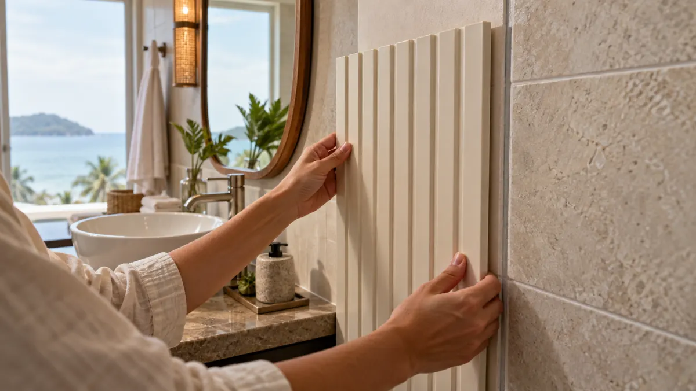

PVC Wall Panels for Coastal Humid Interiors: What to Check
A hotel or apartment near the coast may want a cleanable decorative wall finish, but humid air, plumbing leaks and salt-laden conditions are different problems. “Are PVC wall panels waterproof?” is too broad a question for the whole wall. For a coastal interior in Latin America, first locate the source of moisture, then specify the exact panel, substrate, joints, trims and maintenance plan.

A moisture-tolerant decorative face cannot repair a damp substrate or guarantee a waterproof wall assembly. Check where water enters, whether the wall can dry, and how joints and penetrations will be detailed before approving panels for a bathroom, laundry or coastal hotel corridor.
Separate humidity from water intrusion
High ambient humidity, occasional splashes, condensation and a hidden plumbing leak need different responses. The U.S. EPA’s moisture-control guidance frames moisture as a building-design and maintenance issue, not a property of one decorative finish. A panel can look dry while the substrate behind it remains wet.
Before covering an existing wall, inspect staining, mold, loose tile, soft plaster, failed sealant and persistently damp corners. Correct the leak, drainage or ventilation issue first. If the site is a shower enclosure or another continuously wet zone, the local designer should approve the complete wall system and waterproofing detail, not only the visible panel.
Look at the entire joint and penetration map
Draw the wall elevation and mark starts, ends, inside corners, outlets, service pipes, mirrors and fixtures. Each break in the finish creates a detail that needs an approved trim, sealant or other assembly component. Ask the installer to show how the wall behind the panel is protected and how damaged material can be inspected or replaced.
Our humid-area buyer checklist explains the general distinction between a panel face and a wet-area system. This coastal guide adds a more specific procurement question: how will the installer inspect concealed moisture when access is limited and rooms turn over quickly?
Check fixings and nearby materials
In a coastal environment, metal trims, screws and substructure choices deserve explicit review. Ask the local installer to specify corrosion-appropriate components for the exact room conditions. Do not assume a generic fastener shown in a catalog is right for every site. Similarly, confirm the adhesive or mechanical fixing method against the actual substrate; a product attached to sound dry tile is not the same as one attached to painted, damp or friable plaster.
Where existing tile remains, review our panel-over-tile guide. A site mock-up should include at least one corner and penetration so the client can judge the completed detail, not just the pattern.
Design for cleaning and replacement
For a hotel or rental property, ask who will clean the panels and with which products. Test the proposed cleaner on the actual face film, trim and joint. Keep a record of the approved model and finish and reserve a small matching replacement batch where possible. Our cleaning guide provides a maintenance handover outline.
Lighting and humidity can make gloss, printed pattern and seam lines more visible. Review a connected sample in the actual room. The PVC wall-panel catalog (PDF) can help shortlist finishes; it is not a site-specific waterproofing specification.
Buyer sign-off checklist
- Moisture source identified and corrected before covering the wall.
- Intended room and wet-zone boundary written on the specification.
- Exact SKU, connected sample and finish approved under site lighting.
- Substrate, fixing, trims, joints and penetrations detailed locally.
- Metal accessories reviewed for the coastal environment.
- Cleaning method, inspection access and replacement plan documented.
Common buyer questions
Will PVC panels stop mold behind a wall?
No. Persistent moisture must be investigated and corrected. Covering a damp wall can hide the condition rather than solve it.
Can panels go over existing tile in a coastal bathroom?
Possibly, but only after checking tile bond, moisture, the selected fixing method and the complete wet-area detail.
Is a catalog finish enough for a hotel order?
No. Approve a physical sample, installed mock-up and maintenance details for the exact SKU.
Share the room conditions and photos.
Luvie can help identify panel samples for your local designer and installer to review as part of a complete wall system.
Discuss the project